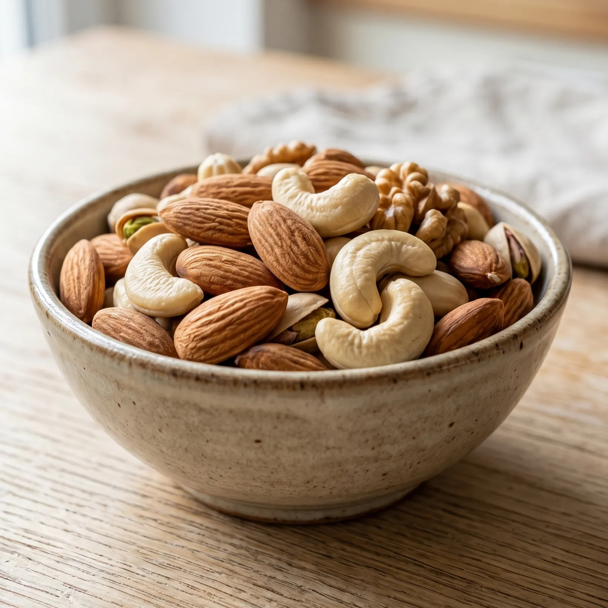
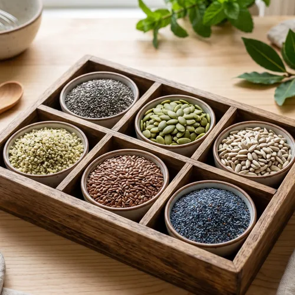
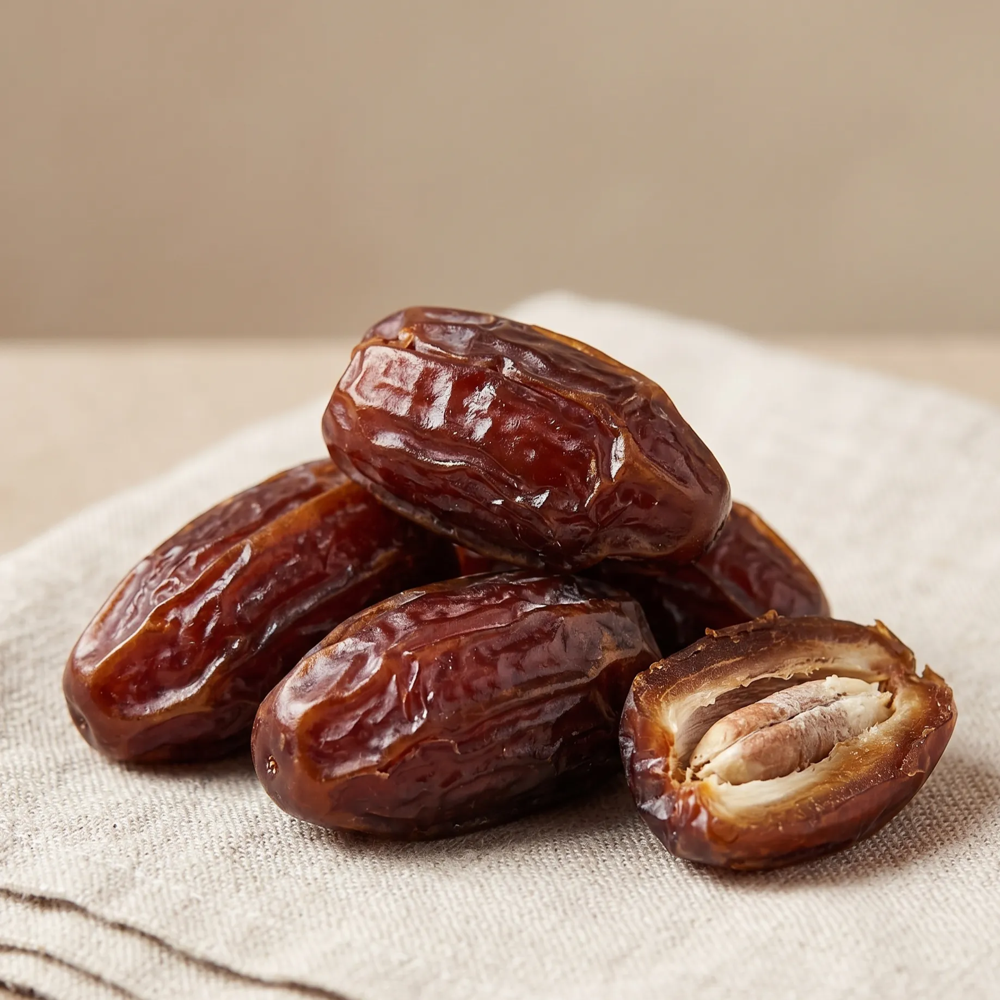
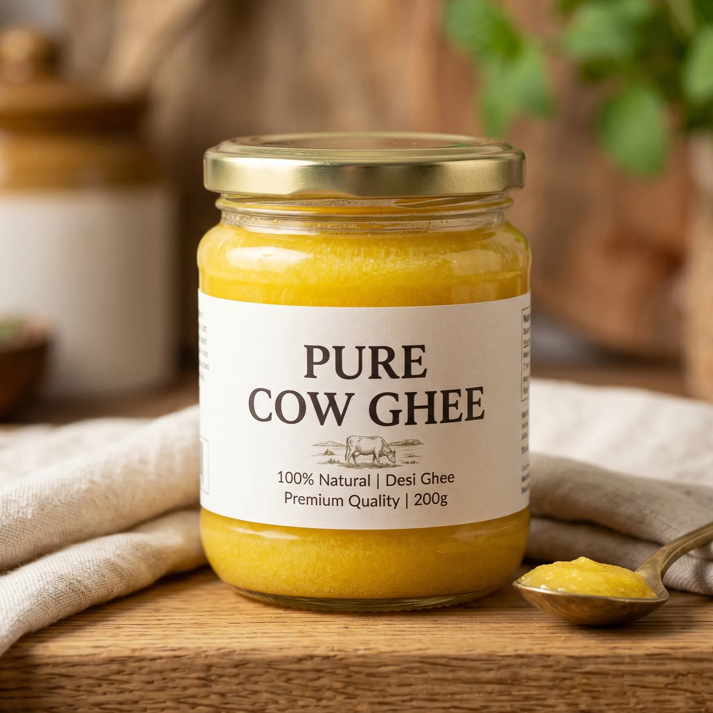

Healthy snacking, made honest
Practical guides on millets, protein, clean ingredients and smarter everyday eating — straight from our kitchen.

Ginger, Cinnamon and Fennel: What Studies Show
Four kitchen spices have been through real trials for period pain. The results are more interesting than expected, and weaker than wellness articles imply.

Magnesium: What It Does and Where to Find It
Calcium tells a muscle to contract. Magnesium is what lets it go again. Where to find it in ordinary Indian food, and what refining took out.

Iron-Rich Indian Foods, and the Vitamin C Trick
How much iron a food contains matters less than how much you absorb. Two changes at the table do most of the work.

Why Period Cramps Happen, Explained Simply
A muscle doing hard work with a restricted blood supply. Knowing the actual sequence also explains the nausea, and the tiredness.
How India's Snacking Changed: Six Numbers
Edible oil consumption nearly tripled in twenty years. Five other figures that explain how the packaged aisle grew, and what regulation did about it.

Dates Are 70% Sugar. So Why Is Their GI Low?
How much sugar, and how fast it arrives, are two different questions. Most arguments about dates come from answering one while meaning the other.

Nolen Gur: Bengal's Winter Sweetener, Explained
Date-palm sap, tapped by shiuli climbers and boiled the same day. One of the last foods that genuinely cannot be made year-round.
The Date Seed That Grew After 2,000 Years
Researchers planted a seed from Masada that last hung on a living tree around the time of the Roman Empire. It grew.
Why Is Packaged Food So Cheap? A Cost Breakdown
A ₹10 packet is not a miracle of efficiency, it is arithmetic. What the ingredients cost per kg, and why ghee changes everything.

What Does "Ultra-Processed" Actually Mean?
Processed and ultra-processed are not the same word. The four NOVA groups, the one-line test, and what the research honestly shows.

Are Peanuts Healthy? Four Myths and the Allergy Bit
A peanut is not a nut, it is a legume. That one fact explains most of the confusion, including the part about allergies that actually matters.
What to Eat Before a Workout: Natural Pre-Workout Food
Three hours means a meal. One hour means something light. Fifteen minutes means two dates. No supplements, no special shopping.
Late-Night Cravings: Why They Happen and What to Eat
Midnight hunger is almost always a message about the day you just had. Here is how to read it, and what to keep within reach.

Healthy Snacks for Kids' Tiffin: A Simple 5-Day Plan
The theory is easy. The child who opens the box and closes it again is the hard part, so this is written for that.
What Is Really Inside Packaged Snacks? A Beginner's Label Guide
Turn the packet over and read the first three ingredients. That is the whole method. Everything else in this guide is detail.
Arabian Dates vs Local Dates: What Actually Changes
Some dates are sweet because they are good dates. Others are sweet because they were dipped in glucose syrup. One line on the packet tells you which.

Is Ghee Actually Healthy? Five Myths, Honestly Answered
Ghee never changed. The advice did, twice. Here is the middle position, which happens to be the honest one.

Are Millet Cookies Actually Healthy, Or Just Good Marketing?
Most healthy cookies are maida cookies wearing a millet costume. Thirty seconds with the ingredient list tells you which one you are holding.
Jaggery vs Refined Sugar vs Desi Khand: Which Is Actually Healthier?
All three come from the same sugarcane juice. Here is what processing actually changes — and why jaggery being “healthy” is the most repeated half-truth in Indian snacking.